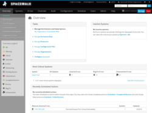
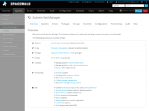
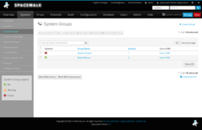
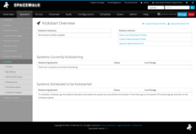
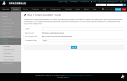
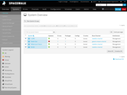
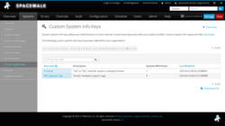
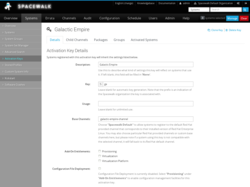
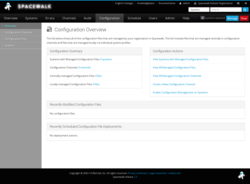
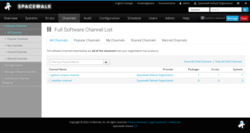

Screenshots
Here are some screenshots of Spacewalk's web-based user interface. Of course, screenshots can only offer a small fraction of the full experience, so why not download Spacewalk and see it for yourself?
Your Spacewalk
This overview page, which appears when you first log into the Spacewalk web interface, is a customizable at-a-glance view your systems' status. Some highlights that can be displayed on this screen include the most out-of-date systems, the systems with the most critical out-of-date status, the latest errata releases, the systems that have most recently registered to your Spacewalk server, and more. You can determine which modules appear on this screen in your user preferences.
{kind=link}
System Set Manager
The system set manager is an interface in Spacewalk where you can perform actions on multiple systems at once. First, you select a group of systems to join the 'system set.' Then, you go to the System Set Manager menu (shown in the screenshot below) to select which actions you would like to run on those systems. These actions can range from rebooting the entire group of systems, to installing a specific package on those systems, to deploying a configuration file to all those systems. Where systems are not completely homogeneous (e.g., if your system set consists of both Fedora 8 and Fedora 9 systems) and an action can only apply to a subset of the systems in the set, the web interface will alert you of this and let you know which systems will be affected and which systems can not be affected.
{kind=link}
System Groups
While the system set manager is a good way to work with a group of systems on the fly that may not be a part of a permanent group, it is also helpful to establish permanent logical groups of systems when there are tasks that involve working with them as a set on a regular basis. (Any system set you create may also be saved out to a permanent system group.) System groups can be used to populate the system set to conduct en masse actions as described above in System Set Manager. System groups are also not mutually exclusive, so a web server located in your Newark data center may be a member of both a "Newark Systems" group as well as your "Web Servers" group. You may grant Spacewalk user accounts access to systems on a system group basis, so system groups are also a good way to limit particular users' access to systems registered to your Spacewalk server.
{kind=link}
Kickstart
Spacewalk has a kickstart system that allows you to create and store kickstart settings for systems as well as conduct kickstarts on systems registered to the Spacewalk server. Shown below is a screenshot of the Kickstart Overview screen which gives you a summary of the saved kickstart profiles on Spacewalk as well as a summary of pending and currently-running kickstart actions. Also shown below is a screenshot of the kickstart creation wizard that allows you to create new Spacewalk kickstart profiles.
{kind=link}

{kind=link}
System Overview
The system overview screen, shown below, is a listing of all the systems that you have access to on the Spacewalk server. The list is sortable by selected columns, and it displays each systems update status (as well as health status when available). It also displays which operating system (by software base channel) each system is running and to which entitlements (provisioining, virtualization, etc) the system has access to.
{kind=link}
Custom Keys
In Spacewalk, you can define custom information keys that you can set and store for any system in Spacewalk. In the screenshot shown below, you can see by example that these keys can be used for storing hardware support keys.
{kind=link}
Activation Keys
Activation keys are tokens that you can create and provide when registering a system to Spacewalk in order to determine registration-time set properties of that system. For example, if you register a system using a 'Fedora 9 Virtual Server' that you created to associate systems with the virtualization entitlement and virtualization-specific software channels for Fedora 9, then that system will automatically subscribe to those channels and be granted a virtualization entitlement during registration. You may also impose a limit on the number of times a given activation key can be used to register to Spacewalk, so they can serve as a method of limiting access to Spacewalk content. (For example, you could hand out an activation key that could only be used 10 times to associate systems to a third-party content channel for which the department you provide with the key only has 10 paid licenses for.)
{kind=link}
Configuration Overview
Spacewalk has a configuration file management system that is based off of the concept of channels of configuration content, similar to the concept of channels of software content. The screenshot below shows the Configuration Overview screen, which gives you a picture of how many configuration files and channels are across your Spacewalk server as well as which configuration files were most-recently modified and deployed.
{kind=link}
Software Channels Overview
The screen below shows an overview of Spacewalk software channels. Software channels are basically repositories of packages that particular systems can subscribe to in order to get access to those packages. You can create base software channels which generally are used for operating system packages, and underneath these channels you can create child software channels which are typically used for storing third-party add on content or extra content that need not be available to all systems. For example, you might wish to separate out desktop-specific applications such as the web browser and email client packages into a desktop child channel, to limit access to those packages from server-class system that are connected to the same base channel.
{kind=link}
Search System
Spacewalk has a nice search system that allows you to search for particular systems, errata, or packages (package search shown below.) Package search is particularly useful if you are looking to install an application but are not sure what channel your system needs access to in order to retrieve the package from Spacewalk.
{kind=link}
Conclusion
We hope these screenshots have given you a better feel for what Spacewalk's web interface can do. Please note that much functionality of Spacewalk is not covered here: live kickstart status monitoring of systems, creation and management of virtual systems, multiple organization partitioning of a Spacewalk server, errata management, the action scheduling interface, and more.
If you like what you see here and/or are curious and want to learn more, we encourage you to download Spacewalk and see for yourself what it can do!